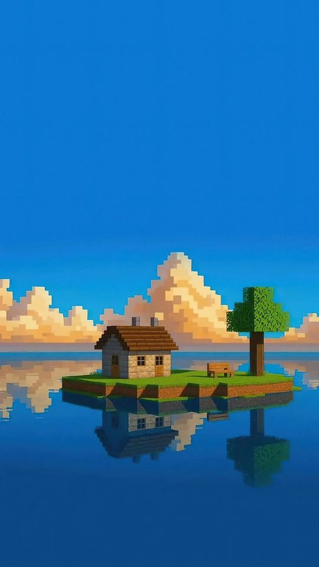

Minecraft Anime Skins: A Practical Guide
Anime skins are one of the most popular ways to customise a Minecraft character, but the process trips people up because Java and Bedrock handle skins differently. This guide explains how skins work, where to find anime designs, how to apply them on both versions of the game, how to make your own in a skin editor, and the mistakes that leave a character looking broken or upside down.
How Minecraft skins actually work
A Minecraft skin is a small image file that wraps around your character like a net. The standard file is 64 by 64 pixels, and every region of that image maps to a specific body part: head, body, arms and legs. Because the mapping is fixed, you cannot simply paste a picture of a character onto the file and expect it to work; the artwork has to be drawn into the correct regions.
There are two body shapes, often called the classic (Steve) model and the slim (Alex) model. The slim model has thinner arms, and a skin drawn for one model can look stretched or misaligned on the other. On Java you choose the model when you upload, while Bedrock handles much of this through its character creator.

Where to find anime skins
Most players start by downloading a finished skin rather than drawing one. Popular skin libraries let you search by character name, and because anime characters are common subjects, there is usually plenty of choice. When you browse, check three things before downloading.
- The model. Make sure the skin matches the body shape you use, classic or slim.
- The preview. Look at the rendered view, not just the flat file, so you can see how it looks in three dimensions.
- The permissions. Some creators ask that their work not be reuploaded or claimed as your own. Respect the note attached to the skin.
Bear in mind that many anime skins are fan art of characters owned by studios and publishers. Using one privately in your own game is one thing; uploading it elsewhere and claiming it as your original work is another, and it can get your upload taken down.

Applying a skin on Java Edition
Java Edition skins are tied to your account, so you change them through the official website or the game launcher rather than inside the world itself. The usual steps are to open your profile, choose the skin file from your device, pick the classic or slim model, and save. The change appears the next time your character loads, and other players see it too, because it is stored on your account.
If you run or play on a server, remember that your account skin is what others see by default. Some servers offer plugins or server-side options, but the account skin is the simple, reliable route that works everywhere.
Applying a skin on Bedrock Edition
Bedrock Edition works differently. It has a character creator where you build or select a look from parts, and it also accepts imported skin files. On mobile and Windows you can import a skin through the dressing room or profile screen and choose the classic or slim model. On consoles, importing files is more restricted, and the marketplace and built-in packs are often the practical options.
Bedrock skin packs, sometimes distributed as a single packaged file, can add a whole set of skins at once. These are handy for themed anime collections, but a pack adds or replaces a set of choices rather than editing one skin, so read what it contains before you install it.

Making your own anime skin
If you cannot find the character you want, a skin editor is the answer. Editors show the skin as a flat canvas and as a live three-dimensional preview at the same time, so you can see the face you are drawing on the head region appear correctly on the model.
- Choose a skin editor and start from a blank template or an existing skin.
- Block in the base colours first: skin tone, hair and main clothing.
- Draw the face on the front of the head, remembering that the eyes sit in the middle band of the face region.
- Add hair to the top and sides of the head, and use the overlay layer for details like highlights.
- Check the three-dimensional preview constantly, because flat images look very different when wrapped onto a model.
- Export the finished file and upload it to your account or import it into Bedrock.

Common mistakes to avoid
The single most common mistake is the wrong model. A skin built for slim arms placed on a classic body shows a gap or a smear along the arms. The second is ignoring the overlay layer, which is where you place hair, hats and glasses that should sit slightly above the base skin; if you draw them on the base layer instead, they will disappear under a helmet in game.
Another frequent problem is transparency. Some skin regions must stay opaque, and filling the wrong area with transparency can leave holes in your character. A surprising number of skins also end up upside down or mirrored because the artist worked from a rotated template without checking the preview. Finally, keep the design readable at a distance: a face with tiny, intricate details turns to mush when your character is a few blocks away.
Get the model right, use the overlay layer, and check the three-dimensional preview before you upload, and your anime skin will look correct on the first try. The rest is just drawing.
Frequently asked questions
Can I use the same anime skin on Java and Bedrock?
The skin file itself can be used on both, but you apply it differently. Java uses your account profile through the website or launcher, while Bedrock uses the character creator or an import screen. You may need to upload or import the file separately on each.
Why does my skin look stretched or broken?
This is almost always a model mismatch. A skin drawn for the slim body shape placed on the classic shape, or the reverse, will not line up. Re-upload or re-import it with the correct model selected.
Is it legal to use anime character skins?
Using a fan-made skin privately in your own game is common practice, but the underlying character is usually owned by a studio or publisher. Reuploading someone else's skin and claiming it as your own can get it removed, so respect the original creator's terms.
Do I need to pay to make a skin?
No. Free skin editors run in a browser and give you the same flat canvas and three-dimensional preview as paid tools. You only pay if you choose a premium editor or buy skin packs from a store.